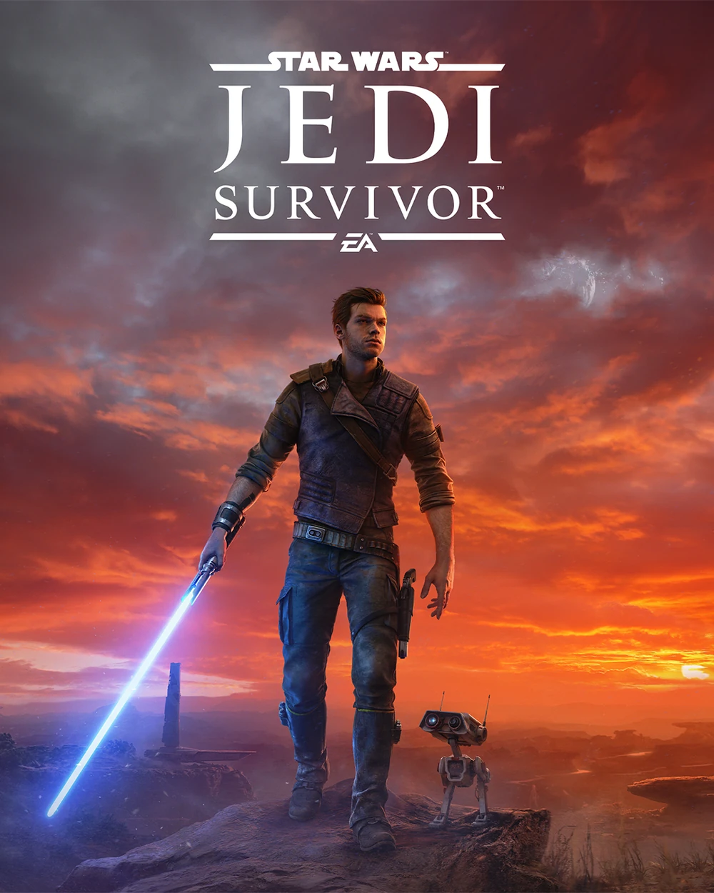

Star Wars Jedi: Survivor is a canon single-player video game in the Star Wars Jedi franchise. It was developed by Respawn Entertainment and released by Electronic Arts as a sequel to the 2019 game Star Wars Jedi: Fallen Order. It was first announced on January 25, 2022, but its title and early details about the game's setting were revealed in a CGI teaser trailer that premiered at Celebration Anaheim on May 27, 2022. A gameplay trailer was later released during The Game Awards 2022 on December 8, 2022. Initially set to release on March 17, 2023, Survivor was briefly delayed to its official release of April 28, 2023.
Star Wars Jedi: Survivor picks up five years after the events of Star Wars Jedi: Fallen Order. Cal must stay one step ahead of the Empire's constant pursuit as he continues to feel the weight of being one of the last remaining Jedi in the galaxy. Developed by the veteran team at Respawn Entertainment, Jedi: Survivor will expand upon iconic Star Wars stories, worlds, and characters, and thrilling combat first experienced in Jedi: Fallen Order. Star Wars Jedi: Survivor is being built for the current generation of gaming hardware to create a deeper and more expansive Star Wars experience for players worldwide when the game launches in 2023.
It has been five years since former Jedi Cal Kestis survived the infiltration of the Inquisitorius headquarters on Nur. The crew of the Stinger Mantis have broken up and began their own separate journeys. Cal's mission remains the same: fighting the Galactic Empire. Now in 9 BBY,[6] Cal, his droid companion BD-1, and their new team travel to Level 2046 on the Imperial capital Coruscant to steal classified Imperial information stored on the yacht of Pau'an Senator Daho Sejan. Disguised as officers of the Coruscant Security Force that had captured the rogue Jedi, the crew secured a clandestine meeting with Sejan. After breaking free of his restraints, Cal fights off Sejan's troops with the help of gun-slinging mercenary Bode Akuna, who reveals along the way that he's providing for his daughter, Kata. Once they board the yacht and capture Sejan, the team prepares to escape Coruscant, but are intercepted by the Ninth Sister, who executes the senator for harboring Cal. The crew's slicer Gabs, along with the Klatooinian twins Koob and Lizz, are killed during the ensuing chaos, but Cal, BD-1, Bode, and fellow crewmember Bravo escape unharmed.
While traveling through Coruscant's underworld to reach the Stinger Mantis, Cal and the Ninth Sister meet once more, engaging in a lightsaber duel. After Cal bests her, he gives her one more chance to let go of her pain, evoking her birth name. Realizing she is too far gone, he decapitates the Dowutin, putting her out of her misery. Cal then reunites with Bode and Bravo. Together, they make plans to Coruscant using Z-95 Headhunters and the Mantis, split up, and later rendezvous using locator beacons. Bravo, however, is shot down by TIE Fighters during the escape, and the Mantis sustains heavy damage to its gyro systems.
Cal decides to head for the Outer Rim world of Koboh, where Greez Dritus has established a cantina, to address the damages. The Mantis crash lands on Koboh after dropping out of hyperspace, and Cal heads for the valley of Rambler's Reach, encountering a band of marauders called the Bedlam Raiders and their reprogrammed Separatist battle droids along the way. After reaching Greez's cantina, Pyloon's Saloon, he encounters the leader of the Bedlam Raiders—a Gen'Dai warrior named Rayvis—who plans to execute the swindling local Turgle for selling him a fake artifact. Cal steps in, killing a veteran Raider named Zeik. After Rayvis applauds him and leaves the outpost peacefully, Turgle and Doma Dendra, the unofficial mayor of Rambler's Reach Outpost, thank Cal for standing up to the Raiders. Cal enters the saloon, where he reunites with Greez. Cal asks the Latero about his friends and former Mantis crew members, to which the Latero replies that he doesn't know. Greez then allows Cal to spend the night in his personal quarters below the saloon.
After awakening, Cal searches the old smugglers' tunnels under the saloon in search of a replacement gyro for the Mantis. In doing so, he stumbles upon an ancient Jedi chamber, where he finds ZN-A4, or "Zee," a droid who served the Jedi during the High Republic Era. Cal uses psychometry on Zee and finds himself in a flashback with Jedi Master Santari Khri, who had—hundreds of years ago—given Zee a tuner capable of unlocking various High Republic Jedi chambers, and ordered her to travel underground and activate an installation known as the Forest Array, warning the droid that "the key to Tanalorr is within that array." Cal reactivates and frees Zee from her imprisonment under rubble, learning that Tanalorr is a planet hidden within the nearby stellar anomaly called the Koboh Abyss, and that it is a paradise world with a reputation of being almost impossible to reach. Zee and Cal return to the saloon, reuniting with Bode, who survived the mission on Coruscant. Zee entrusts Cal with her old mission, since she is no longer able to carry it out.
Traveling to the Forest Array, Cal receives Force visions of the High Republic Jedi Knight Dagan Gera, who had discovered Tanalorr with the help of Santari Khri centuries ago during an uncharted flight through the Abyss. He also receives a vision of an invasion of Tanalorr by mysterious enemies of the Jedi. Cal activates the Forest Array and discovers Dagan still alive and suspended in a bacta tank, albeit missing his right arm. Cal frees him in hopes of recruiting a new Jedi Knight to his cause, but is shocked to discover that Dagan has fallen to the dark side, angry at the Jedi Order for having abandoned Tanalorr. Dagan bleeds his kyber crystal and—after a short duel with Cal—escapes with the help of Rayvis, who had sworn an oath to Dagan centuries prior.
Realizing the value of a planet completely inaccessible to the Empire, Cal, Bode, and Greez repair the Mantis and head for the desert moon Jedha, where Cere Junda has been working with Jedi Master Eno Cordova and the Narkis Anchorites to rebuild the Jedi Archives and serve as a node on the underground Hidden Path network. As they approach, an Anchorite contacts Cal and informs the Mantis crew of a nearby dust storm that will prevent the ship from safely landing. The Anchorite tells Cal that Cere will send a trusted contact to escort him to the base, and gives him coordinates for a rendezvous.
Cal arrives at the rendezvous to find that the contact is Merrin, who escorts him to Cere's base through several Imperial patrols. Along their journey, the two reconnected friends brave the dust storm in a cave. Cere and Cordova use their incomplete archives to find information about Tanalorr and Dagan Gera. Cordova explains that while the archive has no direct knowledge of how to navigate the Abyss, he was able to find two mentions of Gera—records show that he had a retreat on Koboh's surface and frequently visited a laboratory on Koboh's moon. With Cal's crew deciding to visit both locations, Bode gives Cal a blaster, telling him that while it may be unorthodox for a Jedi to use one, Cal should use every tool at his disposal against the Empire. Cal agrees and accepts the gift.
The Mantis crew subsequently visits both locations. In doing so. Cal discovers that Dagan had betrayed the Jedi Order after they decided to abandon Tanalorr, and had murdered his fellow Jedi over their destruction of a series of mysterious devices. Cal recovers the devices and brings them back to Jedha for Cordova to analyze. He is then sent to help Merrin save a Hidden Path safehouse being attacked by the Empire, as the safehouse's leader, Brother Armias, holds contact codes that could jeopardize the Path. While they are unable to save Armias, they recover the contact codes and share a brief kiss before destroying an Imperial Trident-class assault ship.
Returning to Cere's base, they learn that the devices are compasses that could get them safely through the Koboh Abyss. While the two they find were destroyed beyond repair by decree of the Jedi Council after Nihil marauders had attacked Tanalorr—due to a suspicion that the Nihil had stolen one of the compasses to perpetrate their invasion—the crew learns that one intact compass remains and decide to search for it.
Merrin rejoins the Mantis crew as they return to Koboh. Immediately after disembarking, Turgle tells them that Zee had been kidnapped from the saloon by the Bedlam Raiders, and is being held within their base, the crashed core ship of the Lucrehulk-class battleship Primacy. Cal and Bode mount a rescue mission, but are separated after entering the Lucrehulk's wreckage.
As Cal continues his way through the ship, he is confronted by Rayvis. While Cal tries to kill him by stabbing him in the chest with his lightsaber, it has no effect. Rayvis takes Zee's tuner off Cal's belt and attempts to kill the Jedi, but Cal deftly slices off Rayvis's arm—which is easily reattached due to Rayvis's Gen'Dai physiology—before BD-1 uses a piece of machinery to slam Rayvis through a wall. Cal then makes his way toward a turbolift to the control tower, where he listens in on a conversation between Dagan and Rayvis. Dagan says that he knows where Santari Khri hid the final compass, and orders Rayvis to go to the Shattered Moon, while he orders a Raider lieutenant to activate the Forest Array.
Cal finds Zee in the Lucrehulk's control tower, but is confronted by Dagan in the process of freeing her. A duel breaks out, but before Dagan is able to kill his opponent with his lightsaber, Bode arrives to save Cal. Dagan retreats, claiming the two had delayed his departure long enough. Cal and Bode escape the Lucrehulk using its unfired escape pods and return Zee to the saloon.
The crew visits the Shattered Moon once more in search of Rayvis, who Cal hopes can tell them where Dagan is heading. While there, Cal receives a Force vision of Santari and Dagan, and learns that Santari had deceived the Jedi Council and kept one compass intact. He also learns that Santari was the one who had cut Dagan's arm off and placed him in the bacta tank—Santari had long ago attempted to push Dagan away from the dark path he was going down, but Dagan had lunged for the compass, giving Santari no choice but to incapacitate him. Santari, however, had not turned Dagan in for his crimes, instead placing him in the bacta tank for yet-unknown reasons
Cal climbs the central tower of the lunar facility's array, meeting Rayvis at the top. Cal asks him where the final compass is, but Rayvis refuses to tell him, instead telling the story of how Dagan had bested him in single combat long ago, earning the Gen'Dai's loyalty, and how the Jedi of the High Republic had dishonored him by defeating and imprisoning him rather than granting him a warrior's death. Rayvis then offers to share the information only if Cal proves himself worthy in combat. Cal obliges and engages Rayvis in a fierce battle, eventually triumphing over the Gen'Dai. Rayvis tells Cal that the final compass is within Santari Khri's personal observatory in Koboh's atmosphere, and that Dagan is already on his way. Cal attempts to convince Rayvis to fight by his side, but Rayvis refuses, demanding that Cal gives him the warrior's death he's desired for centuries. Cal agrees and brings Rayvis to his knees. Rayvis allows Cal to sever his core nerves, killing him.
Cal and Bode make for Santari Khri's observatory to intercept Dagan before it's too late. They encounter heavy resistance along the way, as the Galactic Empire and the Bedlam Raiders are engaged in a massive battle over the observatory. Nevertheless, they reach the top, confronting Dagan, who is watching a recording left by Santari Khri alongside the compass. The recording finally reveals Santari's intentions: in an act of compassion, she had spared Dagan and placed him in the bacta tank, then left a message for when he woke up, one telling Dagan to either seek her out or continue his obsessive pursuit of Tanalorr.
Dagan questions why Cal and Bode are after him while their true enemy—the Empire—is elsewhere, going on to tell Cal he isn't a survivor, but instead a failure for letting the galaxy fall to the Empire. Dagan then reveals his intentions are to forge the Bedlam Raiders into an army led by Force-sensitive acolytes trained on Tanalorr, then strike out and cleanse the galaxy of the Empire by force. He then engages Cal and Bode in a final duel, using the Force to assault their minds and create illusions fueled by the dark side. Dagan slashes Cal across the chest and muses how Cal was too weak to embrace his anger and pain, turning his back to his opponent. In the meantime, Cal turns Dagan's illusion against him, disguising himself as Dagan's greatest fear: Santari Khri, come to judge Dagan as unworthy of being a Jedi. Dagan strikes out in rage, and Cal uses the surprise to stab Dagan through the chest with his lightsaber. Dagan makes one last attempt to kill Cal with the Force, but Bode shoots him in the back, giving Cal enough time to slash Dagan across the chest, killing the fallen Jedi for good.
Bode and Cal retrieve the compass, which had been damaged during the duel. They decide to return to Jedha to see if Cordova can fix it, and Cal entertains the thought of Dagan's idea having merit, contemplating using Tanalorr for the Hidden Path and raising an army to fight the Empire in secret, a thought Bode heavily disagrees with. Nevertheless, the two depart the observatory and return to Jedha with the Mantis crew.
On Jedha, Cordova begins working to repair the compass, and the Mantis crew holds a bonfire in the desert outside Cere's base. Cal and Bode discuss the future of the Hidden Path on Tanalorr and share a hug of brotherhood. Bode then goes inside as Merrin emerges from the base. The two then privately discuss the future of their relationship, and Cal admits that he knows what he wants now. Cal and Merrin share a kiss before sleeping next to the fire.
The next morning, Cal checks on Cordova's progress, and learns that the compass has been repaired. Cere then receives an alert that Imperial forces are incoming from all sides, and their location is compromised. Cal tells her to evacuate, and turns to see Bode pull a blaster on Cordova, apologizing to Cal for what he's about to do. Bode murders Cordova and attempts to escape on a speeder bike with the compass, with Cal giving chase on a second bike. Cal catches up and confronts Bode over his actions, and Bode tells him that he won't hand the compass to the Empire—he wants it for himself and his daughter. Bode then uses a Force push on Cal and pulls out half of Dagan's lightsaber, revealing himself to be a former Jedi who survived Order 66. Cal is unable to best Bode and is sent tumbling down a cliff, falling unconscious after hitting the bottom.
Meanwhile, Cere oversees the evacuation of the archive. After dispatching several Imperial walkers, Cere goes with BD-1 to secure the Hidden Path's contact codes. Cere hands the codes off to BD-1 and tells him to run. Darth Vader soon enters, and Cere bravely engages the Dark Lord of the Sith in a lightsaber duel to buy time for BD-1 and the codes to reach the Mantis. Despite putting up a good fight, Vader impales Cere with his lightsaber, mortally wounding her. Cal finds Cere in time for her last moments, and sobs as she passes away in his arms.
Cal and the remaining Mantis crew—Merrin, Greez, and BD-1—recover the bodies of Cere and Cordova, and decide to find a better place to bury them, turning their mind to pursuing the treacherous Bode. Cal remembers that Bode had a locator beacon on his ship and attempts tracing it. The signal leads the Mantis crew to the Nova Garon system, where they discover that the Imperial Security Bureau has a hidden base within a frozen asteroid. Cal infiltrates the facility and confronts the base commander, Lank Denvik, who he renders unconscious after forcing Denvik to call off the base's alarm system. Cal then uses an ISB officer's uniform to walk among the facility unnoticed and sneaks into the Officer's Quarters, discovering Bode's residence.
Cal retrieves a datadisc from Bode's quarters and encounters his daughter, Kata, who had been told to pack for a trip by her father. Bode then enters and admits his past: he was a Jedi Knight who, during the Clone Wars, had been assigned to Republic Intelligence as a covert agent by the Jedi Council. The skills he had learned as a spy helped him to disappear after the Great Jedi Purge, and he settled down with a woman named Tayala, whom he had Kata with. However, Tayala was later murdered by agents of the Inquisitorius, barely buying time for Bode and Kata to escape. Bode had then reluctantly cut a deal with Denvik, who he knew from his time with Republic Intelligence and who had offered to hide Bode from the Inquisitors as long as Bode remained useful to Denvik as a covert Imperial spy.
Bode surprises Cal with a Force push and runs out of the room with Kata, alerting the Imperials to Cal's presence. Enraged and confronted by a horde of Imperials, Cal draws on the dark side and slaughters the base's garrison, but is unable to stop Bode from escaping with Kata and the compass. Cal turns his rage on Denvik, beginning to Force choke him. Cal almost murders him in cold blood before Merrin stops him, and Cal instead decides to leave Denvik at the mercy of the Inquisitors and Darth Vader before departing Nova Garon on the Mantis.
Cal watches the datadisc he found in Bode's quarters, which turns out to be the same message from Santari Khri that Dagan Gera had been watching in the Koboh observatory. However, upon viewing the full message, the Mantis crew learns that there is one final way to reach Tanalorr: if one were to activate the three arrays—the Forest Array, lunar array, and observatory array—and aligned them to a set of coordinates embedded in the message, it would create a safe path through the Koboh Abyss.
The Mantis crew returns to Koboh and accesses the Alignment Control Center, learning that a person must stay behind to man the arrays as the Mantis travels through the Abyss. Zee volunteers so that she can see Santari's dream of Tanalorr live once more and complete the mission she had been given two centuries ago. The Mantis then enters the Abyss, and while the arrays malfunction and begin overloading, closing the tunnel before the ship reaches Tanalorr, Cal is able to use the Force and performs a near-blind hyperspace jump that miraculously gets them to their destination. Cal and Merrin share a kiss at their success before the Mantis lands on Tanalorr's surface.
As they make their way across the surface toward the Jedi temple, Merrin and Cal discuss how to deal with Bode. They agree that Bode should be given a chance to surrender, as regardless of his betrayal, they understand what it's like to lose family and grow up alone, and don't want to force that life on Kata. They enter the temple, and Kata agrees to take them to Bode. The two confront him in the temple's atrium, and despite Merrin and Cal assuring him that Kata will be safe, Bode is beyond reason and crushes the bridge to the atrium with the Force, separating Kata from the ensuing lightsaber duel.
Cal subdues Bode after momentarily giving into the dark side once more, and the former Jedi appears to surrender. As Cal turns his back, Bode lunges at him and puts him in a choke hold, Force pushing Kata away and beginning to strangle Merrin with the Force. Realizing Bode is beyond redemption and unable to bear the thought of losing Merrin, Cal breaks free, forcing Bode to let Merrin go. Merrin throws her dagger into Bode's shoulder, and Bode scrambles for his blaster as Cal scrambles for his own. Bode fires first, but his blaster malfunctions. Cal then shoots Bode twice, killing the former Jedi.
Like its predecessor, Star Wars Jedi: Fallen Order, Survivor is a single-player, third-person action-adventure game that features both Metroidvania level design and elements of the "Soulslike" genre, with an emphasis on story, combat, and exploration. The game features five difficulty settings: Story Mode, Jedi Padawan, Jedi Knight, Jedi Master, and Jedi Grand Master. The difficulty setting impacts elements of the game, including parry timing, incoming damage, and enemy aggression.
Survivor expands on the combat from Fallen Order with the introduction of a "stance" system. The balanced single-bladed stance and the crowd-control-focused double-bladed stance from the first game return, but are now joined by an offense-focused dual wielding stance, an unorthodox hybrid blaster-lightsaber stance that boasts tremendous range, and a slow but devastatingly powerful crossguard stance. Up to two stances can be equipped at a time, and the currently equipped stances can be changed at the game's meditation points.
Greatly expanded customization options are featured: compared to the poncho, lightsaber, BD-1 color, and Mantis color options from Fallen Order,[13] Survivor features customizable haircuts, beards, outfits, undershirts, pants, and an expanded system for lightsaber and BD-1 customization. However, the ability to customize the color of the Mantis does not return from the previous game. Further customization options are unlocked through exploration and completing side objectives.
Like Fallen Order, Survivor features a skill tree that can be upgraded using skill points that are gained by completing tasks, such as defeating enemies and finding secret collectibles. Unlike Fallen Order, however, Survivor features entirely separate skill trees for each lightsaber stance, along with separate trees for telekinesis and Force confusion. Survivor also features new Force powers, including Force Dash, Lift, and Slam. Along with this, the game adds new methods of traversal and puzzle-solving.
In contrast to Fallen Order's mainly barren world outside of enemies and scripted story characters, Survivor features an expanded overworld. The planet Koboh plays host to Rambler's Reach Outpost and Pyloon's Saloon, a "hub" of sorts that allows the player to interact with other characters, purchase items from shops, and advance side quests. The player is able to "recruit" characters to return to the Outpost by encountering them in the open world, which usually opens up new dialogue or features within Pyloon's Saloon.
Like in Fallen Order, if the player is defeated, the player loses their experience up to the last skill point they received and is returned to the last meditation point they interacted with. If they return to where they last died, the enemy that delivered the killing blow glows yellow and will provide the player with a health and Force refill, along with returning their lost experience to them.
Stephen Barton and Gordy Haab returned as composers to compose the music for Star Wars Jedi: Survivor, marking the duo's second collaboration. Music from the game was released as two separate albums. The original score was released as Star Wars Jedi: Survivor (Original Video Game Soundtrack). The diegetic music heard in Pyloon's Saloon was released in a separate album entitled Sounds from the Galactic Skylanes (Original Music from Star Wars Jedi: Survivor).
Lead writer Danny Homan wrote the lullaby Ghost Star, sung by Kata on Tanalorr and by Kata and Bode in a Force echo. The song was inspired by the Eugene Field poem, "Wyken, Blynken, and Nod," which his mother sang to him growing up. After first writing lyrics, the melody went through several iterations. It began in a major key before Homan decided to change to a minor key based on input from the music team. He recorded a demo tape on guitar, which he sent to Kata voice actor Tajinae Turner.
Barton and Haab strove for a darker, more mature palette for game's score, and the duo leveraged their momentum from scoring the first game to jump into writing the music for Survivor. From early on, the composers implemented novel strategies in video game music. For instance, they brought in bands to create music for the cantina that would fit in on an alt radio station without listeners realizing it was Star Wars music. For other portions of the score, they tried to create a hyperrealistic sound that pushed the boundaries on production, taking a sophisticated approach to synthesizers and their integration with the orchestra.
One of the narrative starting points for the score was addressing the different views of Cal, Cere, and Bode on life and the struggle against the Empire, especially in how it relates to family. As such, they introduced a new, unsettling theme for the Empire that leaned into its inescapable grasp over the galaxy. The strove to evoke a primal dread and hopelessness that reflected Cal's disposition at points in the narrative. In fact, they modeled this theme over the sinus rhythm of a heart, with an angular melody and a familiar, repetitive nature.
The over 8 hours of music for Star Wars Jedi: Survivor was recorded over a period more than 30 days at Abbey Road, with additional recording sessions at Synchron Stage in Vienna, Austria. The duo also recorded each orchestral section independently, unlike Fallen Order, and implemented many non-orchestral and bespoke instruments to augment the soundscape.
On December 10, 2023, Stephen Barton posted a Tweet linking to the full orchestral score for the game, as part of the "for your consideration" campaign for potential awards. This included all 8 hours of music over 1444 pages of sheet music.
Star Wars Jedi: Survivor has been nominated for and has won several industry awards. One of the earlier awards for which the game was nominated was the 2023 Golden Joystick Awards. The game was nominated in the categories of Best Storytelling, PlayStation Game of the Year, Best Lead Performer (for Cameron Monaghan as Cal Kestis), and Ultimate Game of the Year. At the 2023 Game Awards, Cameron Monaghan was nominated for Best Performance for his role as Cal Kestis, and Survivor was nominated for Best Action / Adventure.
In February 2024, at the 2024 GRAMMY Awards, the score for Star Wars Jedi: Survivor won the award for Best Score Soundtrack for Video Games and Other Interactive Media.[22] Barton and Haab also won in the category Outstanding Original Score for Interactive Media at the 5th Annual Society of Composers and Lyricists Awards.[23] At the 2024 D.I.C.E Awards, the game was nominated in the categories of Outstanding Achievement in Art Direction, Outstanding Achievement in Original Music Composition, Outstanding Achievement in Audio Design, and Adventure Game of the Year
In March of 2024, Jedi: Survivor took home the Game Audio Network Guild Awards for Best Original Soundtrack Album, Music of the Year, Creative and Technical Advancement in Sound Design, Sound Design of the Year, Audio of the Year, Best Audio Mix of the Year, and Best UI, Reward or Objective Sound Design.[25] That same month, Survivor won the Motion Picture Sound Editors Golden Reel Award for Outstanding Achievement in Music Editing - Game Music (for Music Director Nick Laviers and Music Implementers Colin Andrew Grant and Andrew Karboski). In addition, Survivor was nominated in the categories of Outstanding Achievement in Sound Editing - Game Dialogue/ADR (for Dialogue Lead Harrison Deutsch and Senior Dialogue Editor Nick Friedemann) and Outstanding Achievement in Sound Editing - Game Effects/Foley (for Audio Director Nick von Kaenel, Senior Sound Designers Alex Barnhart and Oscar Coen, Sound Designer Ashton Faydenko, Associate Sound Designer Kartika Dewi Luky, Senior Cinematic Sound Designer Tom Jaine, and Sound Implementer Tori Ano).
Also in March of 2024, Survivor received the nomination for the Hugo Award for Best Game or Interactive Work, and the game received six BAFTA Games Awards nominations. The BAFTA nominations were in the categories of Animation, Audio Achievement, Music, Narrative, Performer in a Leading Role (for Cameron Monaghan as Cal Kestis), and Performer in a Supporting Role (for Debra Wilson as Cere Junda).
Star Wars Jedi: Survivor is a sequel to Star Wars Jedi: Fallen Order.[1] A novel, Jedi: Battle Scars, narrates the events between the two video games.